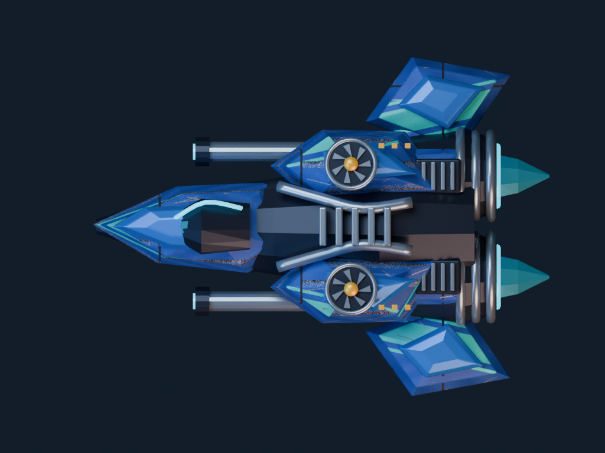

NovaWing 2 — fleet before and after
NovaWing 2 · original identity, real 3D geometry
The left and middle images compare the actual models from the fixed +Z gameplay camera. The right image shows their depth. The new fleet follows the reference artwork for the rose-haired pilot and gunmetal interceptor, crimson and blue enemies, and the original many-eyed biomechanical boss. These are model renders; gameplay readability is checked separately in Godot.
NovaWing heroine
107,372 triangles · 13 material batches · Editable Blender source and embedded-material GLB
Crimson predator
18,378 triangles · 8 material batches · Editable Blender source and embedded-material GLB
Beetle drone
20,742 triangles · 8 material batches · Editable Blender source and embedded-material GLB
Blue heavy interceptor
18,168 triangles · 7 material batches · Editable Blender source and embedded-material GLB
 Before · fixed camera +Z
Before · fixed camera +Z
New · fixed camera +Z New · perspective geometry
New · perspective geometryAmber hornet
18,972 triangles · 8 material batches · Editable Blender source and embedded-material GLB
Biomechanical leviathan
79,134 triangles · 9 material batches · Editable Blender source and embedded-material GLB